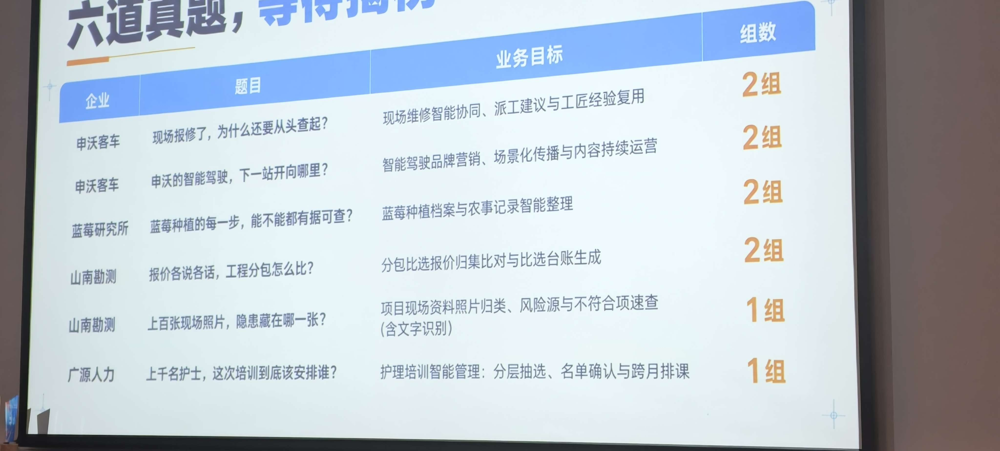
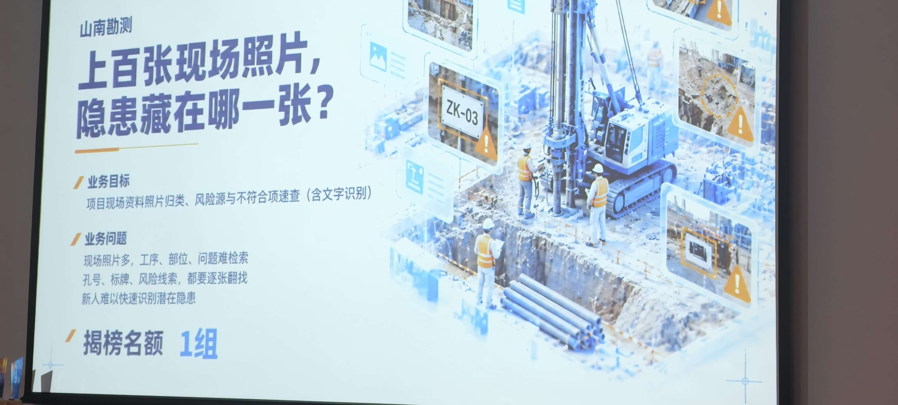

GDPS 2026 全球开发者先锋大会 · FDE 智能人才工厂 · 2026.10.23–25 · 上海张江科学会堂
六道真题，从业务问题到可验证的 AI 原型
现场拿到的不是练习题，是四家企业挂在生产上的真问题：客车维修为什么每次都从头查起、蓝莓的每一步能不能有据可查、
分包报价各说各话怎么比、上百张现场照片隐患藏在哪、上千名护士培训该派谁。
每一题都拆成同一套五段：场景 → 项目 → 专项技术点 → OKR → 解决方案，
并且只用一个北极星业务指标衡量成败——不是功能数量。
6 道真题
4 家企业
10 个组队
3 天连续共创
48 场 FDE 对训
5 场专项分享
结项：真实卡顿 · 团队 AI 模型 · 测试与验证记录
01
真题原片

GDPS 2026 FDE 智能人才工厂 · 企业出真题环节现场大屏 · 2026-10-23
| # | 企业 | 题目 | 业务目标 | 组数 |
|---|
| 01 | 申沃客车 | 现场报修了，为什么还要从头查起？ | 现场维修智能协同、派工建议与工匠经验复用 | 2 组 |
| 02 | 申沃客车 | 申沃的智能驾驶，下一站开向哪里？ | 智能驾驶品牌营销、场景化传播与内容持续运营 | 2 组 |
| 03 | 蓝莓研究所 | 蓝莓种植的每一步，能不能都有据可查？ | 蓝莓种植档案与农事记录智能整理 | 2 组 |
| 04 | 山南勘测 | 报价各说各话，工程分包怎么比？ | 分包比选报价归集比对与比选台账生成 | 2 组 |
| 05 | 山南勘测 | 上百张现场照片，隐患藏在哪一张？ | 项目现场资料照片归档、风险源与不符合项速查（含文字识别） | 1 组 |
| 06 | 广源人力 | 上千名护士，这次培训到底该安排谁？ | 护理培训智能管理：分层抽选、名单确认与跨月排课 | 1 组 |
题面照抄原文。企业规模、在用系统名称、数据口径等原片未提供的信息，全部标注 ⚠️ 待 Day1 现场确认，不做事实断言。
02
六题总览
一行一北极星。技术路线不同，但落法一致：先把业务对象建出来，再让模型只在被约束的范围内干活，最后把动作写回真实系统。
| # | 企业 | 北极星指标 | 主技术路线 | 组数 |
|---|
| 01 | 申沃客车 | 首次诊断命中率（历史回测 Top-1） | 工单本体 · 混合检索 RAG · 故障树推理 · 回写工单 | 2 组 |
| 02 | 申沃客车 | 单条内容的有效线索数（可归因） | 多模态素材库 · 品牌知识库 · 内容 Agent 流水线 | 2 组 |
| 03 | 蓝莓研究所 | 追溯完整度（批次能否回溯全部农事） | 植株级本体 · 照片语音结构化 · 时序溯源 | 2 组 |
| 04 | 山南勘测 | 比选台账产出耗时 | 报价行本体 · OCR/Excel 解析 · 口径归一 · 漏项校验 | 2 组 |
| 05 | 山南勘测 | 隐患线索召回率 | 照片去重归集 · 逐类隐患 VLM · 标牌 OCR · 混合检索 | 1 组 |
| 06 | 广源人力 | 排课出单耗时 | 资格规则引擎 · CP-SAT 约束求解 · 可解释名单 | 1 组 |
03
四家企业是谁
联网核实的结果。这是全部方案的地基——不知道企业在真实做什么，写出来的一定是通用模板。
来源分级：1 政府/国家标准 · 2 权威媒体 · 3 企业官网/厂商案例（仅供参考）· 4 转载线索。等级 3 单独不支撑结论。
申沃客车
上海申沃客车有限公司 · 上汽集团全资客车研发制造企业
2000 年成立，闵行莘庄工业区；车型 7–27 米，覆盖纯电 / 燃料电池 / 插混；累计销售 4.3 万台大中型客车；9 系配 ADAS 智能驾驶辅助系统。2026-06 与享道出行（SAIC 移动出行品牌）签「数字化+智能化」战略合作：车联网平台、RoboBus 自动驾驶、AI 大模型，享道输出 Robotaxi 云控架构并联合构建车辆监控调度平台与乘客预约客户端，明确「推动 AI 融入研发、生产、售后全流程」。
校准：真空白不是「没有系统」——售后已用简道云零代码做过试点，同业宇通已有智能远程诊断。缺的是经验没结构化 + 派工没数据化。且它的售后是车队型运营商的售后，目标函数是恢复运营，不是修好。题 02 在业务上等于「从卖车转向卖运营服务」。
来源：中国新闻网上海 2026-06-06（3·仅供参考）· 上观新闻（3）· 人民网 2022-08（3）· 简道云厂商案例（3）
蓝莓研究所
上海市蓝莓研究所 · 民办非企业单位 · 主管：上海市绿化和市容管理局
2012-01-18 成立，上海金山区吕巷镇，所长陆敏。牵头起草上海市地方标准《蓝莓栽培技术规范》（2023-10 通过技术审查）；敏蓝「五个统一」质量管理体系获第九届金山区区长质量奖；基地有物联网智慧农业肥水一体化自动灌溉；中央财政项目辐射带动 502 亩；田间学校培训 6000 余人次。
校准：不是种植企业，是技术推广方——资产是「标准 + 品种 + 技术 + 培训」，服务半径远超自有基地。真问题不是「给自己建档」，而是「把标准、种苗、技术指导的交付过程沉淀成可复核的数据」。
同族参照：麻江县已有产业级蓝莓大数据平台（117 类种质、近 10 年数据），官方承认的缺口是数据「大多停留在农户脑海，没有形成标准化、结构化的数据」。
来源：国家林草局/上海市绿化局公告（1）· 贵阳市大数据局转载《农民日报》（1/2）· 百科（3·仅供参考）
山南勘测
上海山南勘测设计有限公司 · 浦东金桥 · 6–7 项甲级资质
2003 年成立，260–370 余人；持工程勘察（岩土/工程测量/水文地质）、工程测量、海洋测绘、地基基础检测评估等甲级资质。主营勘察 / 监测 / 检测 / 测绘 / 物探 / 岩土设计。上海市经信委「质量标杆」案例——已创新提出「AI（All In，全维度嵌入）工作法」：嵌入政府、设计院、施工、运管单位，建地下空间三维数据信息库，勘测成果与更新方案「反演、反敷」。
校准：已经在做 AI 工作法。本题真实命题是「把已有 AI 能力从生产/技术环节接到商业与合规环节」。成效侧可引用：优良率 75%→90%、总工期 −40%+、节约投资 1.2 亿+。且身处政府采购评审专家体系 → 口径与留痕要求极高。
来源：上海市经济和信息化委员会 2022-10-20（1）· 公司官网 shsnkc.com（3·仅供参考）
广源人力
上海广源人力资源有限公司 · 上海市卫生人才交流服务中心 100% 出资
2003 年成立，国有独资背景；主营人才派遣 / 人事外包 / 岗位外包 / 管理咨询 / 培训评价 / 专才招聘；2026-02 经上海黄浦区人社局备案为企业职业技能等级评价机构。据公开报道，与 155 家医院合作、劳务派遣人员超 2.2 万（2025 年参保 22341 人、营收 33.65 亿）——⚠️ 该规模数据来自高校访企报道，Day1 现场确认。2026 年在采购「数字员工服务平台」「AI 交互真人数字人」。
校准：「上千名护士」是低估。培训评价是它的正式资质业务。国企 + 卫健系统 → 合规、留痕、可审计要求远高于民企。方案要定位成接进现有数字化盘子的一个模块，不另起炉灶。上海技能等级认定机制 = 评价机构备案 + 目录清单 + 有效期评估（期满不再延续）→ 证书有效期是有官方机制支撑的硬约束。
来源：上海市黄浦区人民政府 / 上海市人社局（1）· 国家企业信用信息公示系统（经百科，1）· 高校访企报道（3·仅供参考）
04
六题共用的骨架
拆解语言不临时发明，全部沿用既有 FDE 方法论——这决定了六份方案能在同一支团队手里并行推进。
Ontology 三步法
用业务语言定义对象（车、批次、地块、护士），提前固化关联，动作能反写回系统。不让模型直接啃原始表。
Echo + Delta
Echo 负责听懂业务并定义问题，Delta 负责快速交付可跑结果。缺 Echo 变咨询，缺 Delta 变外包。题 02 是 Echo 主导的题。
5 天一个 demo 节点
不写长需求文档，每 5 天一次客户可见演示。本仓按训练营的 3 天节奏给到 Day1–Day3 交付物。
碎石路 → 高速公路
现场定制不是浪费，是用客户场景做产品调研。每题都标出哪些部分能沉淀成跨行业通用件。
题 01 / 申沃客车 · 智能制造
现场报修了，为什么还要从头查起？
业务目标：现场维修智能协同、派工建议与工匠经验复用 · 2 组 · Echo 售后技术主管/老师傅 · Delta 算法+后端
工单 Ontology混合检索 RAG故障树推理
技能画像派工Write-back离线回测内网部署
三层拆解树 · L1 → L2 → L3
-
L2-1经验只存在于人脑，不存在于可检索系统
根因：老师傅的排查顺序是口述的隐性知识；录成文字成本高，无人整理，离职即带走
- 经验条目化工作台：老师傅口述/现场随手记录 → ASR 转写 + LLM 代拟成标准条目（现象/可能原因/排查顺序/禁忌/所需备件）→ 老师傅只做"确认/改"，不做撰写
同族复用 · 任何"经验随人走"的场景：新产品工艺规程、老师傅质检判据、老中医经验方
- 经验结构化为可执行排查路径：不是写成一段话，而是写成有序步骤树（分支条件 → 下一步），每步带观测点与判定标准
同族复用 · 设备点检 SOP、巡检路线编排、应急预案决策树
- 经验与工单双向绑定：一条经验条目 = 一条带型号/规格与故障域上下文的排查路径；工单可反向引用它
同族复用 · 质量事故案例库、新员工带徒教材、审计举证
-
L2-2工单 / 报警码（故障码）/ 手册 / 型号（规格）四种载体彼此不连通
根因：现象、码、部件、型号/规格、章节各自成表，查询时临时拼接
- 工单本体（Ontology）：用业务语言定义 RepairObject / Fault / AlarmCode(FaultCode) / RepairAction / Part / Technician / WorkOrder / ManualSection，并提前固化关联（型号/规格↔手册版本↔章节、现象↔码↔部件、订单↔备件↔技师）
同族复用 · 通用"制造/服务/巡检"对象模型；换行业只换实体名
- 主数据统一编码：料号、报警码/故障码、手册章节号、型号/规格配置各给唯一 ID 与版本；变更有生效日期
同族复用 · 备件主数据、设备台账、固定资产编码统一
- 型号/规格约束强制校验：任何检索与建议都必须带型号/规格/配置过滤；无匹配则明确说"无手册依据"，不猜
同族复用 · 多规格多配置产品的选型与报价防错
-
L2-3现场输入的口径与知识库口径对不上
根因：技师说"起步发闷"，码表写"P0AA6"，手册写"驱动系统功率限制"（设备侧同理：口语现象 / 报警码 / 手册描述三套说法）
- 现象 ↔ 报警码/故障码映射表：人工维护主干（码 → 标准现象描述），从历史工单反向挖掘补充同义映射；技师输入先做症状归一化再进检索
同族复用 · 客服工单分类、售后问诊分流、设备报警代码归一
- 检索双过滤 + 混合召回：结构化过滤（型号/规格/码域）+ 语义召回（手册语言）+ 关键词召回（料号/码）三路并集后重排
同族复用 · 法规/标准/合同条款检索
-
L2-4派工与技师能力没有数据化
根因：靠班长对"谁熟哪型号、哪类故障"的记忆
- 技师技能画像：从历史工单反推每名技师的"擅长故障域 × 熟悉型号/规格 × 认证资质 × 通过率"
同族复用 · 岗位胜任力画像、招聘匹配、外包队伍能力评估
- 派工匹配打分 + 理由生成：得分 = 技能匹配 + 故障域重合 + 班次可用 + 资质合规，输出 Top-N 与选他/不选他的理由
同族复用 · 抢单派单、值班排班、维修工程师分派
-
横贯
回写闭环 + 闭环即评测
跨 L2 的横贯机制
- 回写闭环 + 闭环即评测：技师勾选执行的步骤与最终原因回写工单；每条闭环工单自动成为评测样本；误判案例回流为 few-shot 与规则修正
同族复用 · 所有"人在回路"的 AI 系统通用：合同审核、质检判定、客服工单
L2 = 4 条能力缺口 · L3 = 11 条机制 · KR 7 条
三层拆解树 · L1 → L2 → L3
-
L2-1经验只存在于人脑，不存在于可检索系统
根因：老师傅的排查顺序是口述的隐性知识，录成文字成本高、无人整理、离职即带走。
- 经验条目化工作台：口述/随手记录 → AI 代拟成标准条目 → 老师傅只做确认
同族复用 · 新产品工艺规程 · 质检判据 · 经验方
- 经验结构化为可执行排查路径：有序步骤树（分支条件→下一步），每步带观测点与判定标准
同族复用 · 设备点检 SOP · 巡检路线 · 应急决策树
- 经验与工单双向绑定：一条经验 = 一条带车型/故障域上下文的排查路径
同族复用 · 事故案例库 · 带徒教材 · 审计举证
-
L2-2工单 / 故障码 / 手册 / 车型四种载体彼此不连通
根因：现象、码、部件、车型、章节各自成表，查询时临时拼接。车型 7–26m × 多动力形式，跨车型串检是真实事故风险。
- 工单本体（Ontology）：Vehicle·Fault·Code·Action·Part·Technician·Order，Links 提前固化
同族复用 · 制造/服务/巡检通用对象模型
- 主数据统一编码：料号/码/章节号/车型配置唯一 ID + 版本 + 生效日期
同族复用 · 备件主数据 · 设备台账 · 资产编码
- 车型约束强制校验：无匹配就明说"无手册依据"，不猜
同族复用 · 多规格多配置选型与报价防错
-
L2-3现场输入的口径与知识库口径对不上
根因：技师说"起步发闷"，码表写 P0AA6，手册写"驱动系统功率限制"——检索第一道门就漏。
- 现象 ↔ 故障码映射表：主干人工维护 + 从历史工单挖掘同义映射，输入先做症状归一化
同族复用 · 工单分类 · 问诊分流 · 报警码归一
- 检索双过滤 + 混合召回：结构化过滤 + 语义召回 + 关键词召回三路并集后重排
同族复用 · 法规/标准/合同条款检索
-
L2-4派工与技师能力没有数据化
根因：靠班长对"谁熟哪款车、哪类故障"的记忆。
- 技师技能画像：从历史工单反推「擅长故障域 × 熟悉车型 × 认证资质 × 通过率」
同族复用 · 岗位胜任力画像 · 招聘匹配 · 外包队伍评估
- 派工匹配打分 + 理由生成：得分可解释，输出"选他 / 为什么不选他"
同族复用 · 抢单派单 · 值班排班 · 工程师分派
L2 = 4 条能力缺口 · L3 = 11 条机制（3+3+2+2+横贯 1）· 另有一条横贯缺口「结果不回流成可复用知识」→ 机制：回写闭环 + 闭环即评测
场景：经验在脑子里，历史工单检索不了
技师到场处置要经过「确认车型 → 判断原因 → 逐条排查 → 备件 → 复检关单」。中间两步是黑洞：判断依据是老师傅口口相传，历史工单只写了自由文本，检索等于没有。
- 查手册慢：PDF 无结构，靠翻章节
- 历史工单用不上：没有统一故障码/部件/步骤字段
- 经验留不下：录成文字成本太高，无人整理
- 派工靠拍脑袋：技师擅长什么没有数据化
项目：维修协同助手 Repair Copilot
- 输入
- 车架号/车型 + 故障现象（文字/照片/故障码）
- 输出
- 候选故障原因 Top-N · 推荐排查步骤 · 携带配件清单 · 建议派工
- 溯源
- 每条结论指回手册章节 / 历史工单 / 经验条目
- 砍掉
- 不改工单系统本体 · 不接实时库存 · 不做自动报价
- 范围
- 只覆盖 Top 20 高频故障码/现象
解决方案：从原始工单到可回写的答案
OKR
O：让现场维修从「凭经验从头查起」变成「带着答案进场」，让老师傅的经验第一次成为可复用资产。
护栏：二次上门率不得高于基线。工具让技师"照系统走"而漏掉真原因，即使命中率达标也算失败。
三天节奏
- Day1 · 开题
2 小时老师傅访谈 + 100 条脱敏工单 + 手册 + DTC 表；定 Top20 故障范围。
- Day2 · 共解
抽取归一管线、手册索引、检索+故障树服务、工单侧边栏；离线回测跑第一版基线。
- Day3 · 出厂
用真实故障码端到端走一遍；老师傅逐条打分；打通回写。
最大风险：老师傅不愿配合或没时间 → 兜底是「语音录入 + AI 代拟，他只做确认」，同时把范围砍到 Top20 故障码。
题 02 / 申沃客车 · 品牌传播
申沃的智能驾驶，下一站开向哪里？
业务目标：智能驾驶品牌营销、场景化传播与内容持续运营 · 2 组 · Echo 主导 市场部/品牌负责人 · Delta 内容流水线工程师
多模态打标品牌知识库 RAG内容 Agent 流水线
参数与合规校验选题级归因审核台Echo 主导题
三层拆解树 · L1 → L2 → L3
-
L2-1素材与运营数据没有变成可检索的场景事实
根因：售后侧虽已有零代码试点，但市场侧的素材仍是视频、里程、接管事件这些非结构化或半结构化资产，只以文件名与口述存在；没有场景标签、没有出处、没有时点
- 多模态素材场景打标管线：视频抽帧 → VLM 生成场景描述 → 归一为受控标签（天气 / 路段 / 交通参与者 / 车型 / 城市 / 线路 / 是否接管）+ 人工纠正回写
同族复用 · 任何"素材躺在硬盘"的库：展会演示录像、现场施工照片、培训录像、产品开箱视频
- 事实原子抽取与归一：把测试报告、车队台账、口述补充抽成结构化事实原子 主体 + 指标 + 数值 + 口径 + 时点 + 出处；同名指标只留一条，多条并存显式标"口径分歧"
同族复用 · 财报关键数据抽取、招投标参数归集、质检报告指标入库、产品参数表治理
- 结构化过滤 + 文本检索双索引：按城市 / 线路 / 天气 / 车型做结构化过滤 + 自然语言语义召回；命中回跳视频时间戳；没标签 = 不存在
同族复用 · 素材库、工程影像库、案例库、投标文件库
-
L2-2讲得出参数，讲不出运营价值
根因：内容停在"自动驾驶 / 激光雷达 / 算力"的概念与技术层；RoboBus 的价值在运营链路（城市线路、车队调度、乘客预约、运营方结果），这条链路没有被翻译成内容语言
- 运营场景价值主张结构化：把 RoboBus 运营链拆成 城市/线路 → 车队与调度 → 乘客预约端 → 运营方结果 四环，每环绑定一个可量化运营指标 + 一个证据锚
同族复用 · 任何 To G / To B 产品的"能力 → 运营结果"映射：云厂商、政务 SaaS、工业设备
- 场景故事骨架：固定骨架 谁 · 在什么路况/时刻 · 遇到什么 · 车怎么应对 · 乘客或运营方得到什么 · 证据来自哪；骨架固定、表达可换
同族复用 · 客户案例故事、展会解说稿、战报、对外版故障复盘
- 受众分讲法改写：同一事实核心，面向公交公司运营方 / 乘客 / 媒体 / 政府四种讲法不同；只换表达与例子，不换事实
同族复用 · 发布会多受众材料、投资者 / 客户 / 媒体三套说明
-
L2-3对外事实没有唯一版本与出处，发布前拦不住
根因：参数、里程、车辆数、接管率散在 PPT、测试报告、同事口述里，版本与时点不明；多端改写靠复制粘贴，口径逐版漂移；合规红线没有可执行清单
- 对外口径卡（唯一权威事实表）：每个可对外的数字与承诺有唯一 ID、当前版本、生效日期、停用标记；检索强制过滤"当前在售车型 + 当前生效版本"
同族复用 · 对外说明书、价目表、服务承诺口径、对外白皮书
- 正文占位符 + 发布前一致性校验：正文里的数字只允许来自 {{fact_id}} 占位符；校验器逐项比对口径卡，未替换占位符或不一致即阻断
同族复用 · 财报解读、投标文件、ESG 报告、对外白皮书
- 合规红线双层校验 + 人工签字：禁用词表 + 规则正则 + LLM 语义判定（绝对化用语、未经证实的承诺、竞品比较边界）；拦截清单必须有人签字放行
同族复用 · 广告合规、招聘 JD、外资披露材料、平台运营规范
- 舆情与调性管控：平台舆情工具 + 人工定时看两条路；发布前红线校验拦绝对化用语与越界竞品比较，发布后异常上升回溯当天发了什么；舆情不进内容生成链路，只做发布后的看和发布前的拦
同族复用 · 通用"对外内容合规"：法务审稿、政务发布、上市公司 IR 口径、平台社区运营
-
L2-4内容效果不回流，选题只能凭直觉
根因：发布后各平台数据与内容之间没有绑定，"哪类题材 / 哪个场景有效"没人答得出来；市场部的采纳与弃用意见也没留痕
- 发布即绑定选题 ID + 效果回填：发布时写入 选题ID / 场景标签 / 题材 / 时长 / 平台 / 发布时间；各平台数据手工或接口回填进同一张表
同族复用 · 活动投放、电商详情页、SEO 内容、雇主品牌
- 选题级归因 + 存量内容回标：归因到可聚合的题材 / 场景 / 平台，而非单篇；存量内容回标建第一版"什么有效"基线
同族复用 · 内容复盘、投放素材效果回流、渠道组合分析
- 采纳率回流校准：审核台记录"采用 / 轻改 / 重写 / 弃用 + 原因"，回流成 few-shot 与风格约束；弃用理由是最贵的训练信号
同族复用 · 任何人机共写场景：客服话术、法务文书初稿、财报点评
L2 = 4 条能力缺口 · L3 = 13 条机制 · KR 9 条
三层拆解树 · L1 → L2 → L3
-
L2-1素材与运营数据没有变成可检索的场景事实
根因：售后侧已有零代码试点，但市场侧素材仍只是视频、里程、接管事件这些非结构化资产，只以文件名与口述存在。
- 多模态素材场景打标管线：抽帧 → VLM 生成描述 → 归一为受控标签 + 人工纠正回写
同族复用 · 展会录像 · 现场施工照片 · 培训录像 · 开箱视频
- 事实原子抽取与归一：抽成「主体 + 指标 + 数值 + 口径 + 时点 + 出处」，同名指标只留一条，分歧显式标出
同族复用 · 财报数据抽取 · 招投标参数归集 · 质检指标入库
- 结构化过滤 + 文本检索双索引：没标签 = 不存在
同族复用 · 素材库 · 工程影像库 · 案例库
-
L2-2讲得出参数，讲不出运营价值
根因：内容停在"自动驾驶 / 激光雷达 / 算力"的概念与技术层，RoboBus 的价值在运营链路（城市线路、车队调度、乘客预约、运营方结果），这条链路没被翻译成内容语言。
- 运营场景价值主张结构化：城市/线路 → 车队与调度 → 乘客预约端 → 运营方结果，每环绑一个可量化指标 + 一个证据锚
同族复用 · 任何 To G / To B 的「能力→运营结果」映射
- 场景故事骨架：谁 · 什么路况时刻 · 遇到什么 · 怎么应对 · 得到什么 · 证据来自哪（骨架固定、表达可换）
同族复用 · 客户案例 · 展会解说稿 · 战报
- 受众分讲法改写：运营方 / 乘客 / 媒体 / 政府四种讲法，只换表达不换事实
同族复用 · 发布会多受众材料 · 投资者/客户/媒体三套说明
-
L2-3对外事实没有唯一版本与出处，发布前拦不住
根因：参数、里程、车辆数、接管率散在 PPT、测试报告、同事口述里，版本与时点不明，多端改写靠复制粘贴。
- 对外口径卡（唯一权威事实表）：唯一 ID + 当前版本 + 生效日期 + 停用标记
同族复用 · 对外说明书 · 价目表 · 服务承诺口径
- 正文占位符 + 发布前一致性校验：数字只允许来自 {{fact_id}}，未替换或不一致即阻断
同族复用 · 财报解读 · 投标文件 · ESG 报告
- 合规红线双层校验 + 人工签字：禁用词表 + 正则 + LLM 语义判定，拦截清单有人签字放行
同族复用 · 广告合规 · 招聘 JD · 外资披露材料
-
L2-4内容效果不回流，选题只能凭直觉
根因：发布后各平台数据与内容之间没有绑定，市场部的采纳与弃用意见也没留痕。
- 发布即绑定选题 ID + 效果回填：选题/场景/题材/时长/平台/发布时间进同一张表
同族复用 · 活动投放 · 电商详情页 · SEO 内容 · 雇主品牌
- 选题级归因 + 存量内容回标：归因到可聚合的题材/场景/平台，而非单篇
同族复用 · 内容复盘 · 渠道组合分析
- 采纳率回流校准：采用/轻改/重写/弃用 + 原因回流，弃用理由是最贵的训练信号
同族复用 · 客服话术 · 法务文书初稿 · 财报点评
L2 = 4 条能力缺口 · L3 = 12 条机制（3+3+3+3）
场景：素材躺着没人翻，每篇内容从零写
路测视频、车队里程、接管记录散在测试同事的电脑和微信群里；市场部每次写稿都要重新找素材、重新问参数、重新改格式；发完效果数据躺在各平台后台，与内容对不上号。
- 素材没资产化：只有文件名，没有场景标签
- 技术话没人翻译：参数与传播口径之间缺知识层
- 写完就忘：没有「内容 → 效果」的闭环
- 参数常对不上：没有发布前一致性校验
项目：智能驾驶内容工厂
- 交付
- 素材库 · 品牌知识库 · 内容 Agent · 可溯源审核台 · 效果归因
- 输入
- 市场部当场给出的 8–12 个真实选题
- 输出
- 公众号长文 + 小红书短文 + 短视频脚本（三端）
- 砍掉
- 不做视频自动剪辑 · 不做舆情监控 · 不做自建 BI
- 红线
- 正文只允许引用参数库与素材库，无素材不写
解决方案：7 步内容工作流，每步可单独重跑
OKR
O：让智能驾驶的技术资产持续变成可运营的内容，市场部不再每次从零写，且每条内容都能说清效果。
三天节奏
- Day1 · 开题
市场部 2 小时访谈：必须拿到 8–12 个真实选题 + 指标口径，否则不进 Day2 开发。
- Day2 · 共解
素材打标管线、参数知识库、合规词表、7 步工作流、审核台；用 3 个真实选题出稿。
- Day3 · 出厂
市场部当场出 3 个新选题跑通；10 条错误参数对抗测试演示拦截。
这道题的胜负手：Echo（市场部）是主角，不是工程。把品牌判断外包给模型，市场部当场就不认。
题 03 / 蓝莓研究所 · 农业科技
蓝莓种植的每一步，能不能都有据可查？
业务目标：蓝莓种植档案与农事记录智能整理 · 2 组 · Echo 农艺师/基地负责人 · Delta 算法+后端
植株级本体照片 VLM 解析语音 ASR
合规规则阻断时序溯源相关性归因离线优先
三层拆解树 · L1 → L2 → L3
-
L2-1农事记录没有对象化，"标准"落不到现场动作上
根因：记录形态是"地块 + 日期 + 一句话"，没有品种/生育期/地块/行/株/农事批次/采收批次这些对象，标准条款挂不到具体动作上
- 农事本体（Ontology 三步法）：Objects（Farm / Block / Row / Bush / Operation / Input / HarvestBatch / Quality / Clause）→ Links（Block→Row→Bush、Operation→Block·Bush、HarvestBatch→Operation+Quality、Clause→Operation）→ Actions+Write-back（确认即写入、作废即改）
同族复用 · 通用"种植/养护"对象模型；换行业只换实体名（设备/模具/批次/客户同一套结构）
- 标准条款 → 可勾选作业项：把《蓝莓栽培技术规范》拆成有对象、有触发条件、有判定依据的作业项（如"采前 N 天内不得使用某类药剂"），条款原文与判定口径一起入库
同族复用 · 任何"标准/规范/规程"落到现场的场景：施工工艺卡、检验规程、EHS 检查项、内审条款
- 确认式采集（拍照 + 一句话）：拍照或语音口述 → ASR+VLM 抽成草稿 → 农工只做"确认/改" → 低置信字段高亮 → 写入对象
同族复用 · 任何"现场零散输入"的场景：巡检打卡、仓储收货、实验记录、设备点检
-
L2-2投入品是不可核的黑箱
根因：农药/肥料/水的信息只存在于包装标签照片里，登记证号、成分、剂量、禁限用属性没有落成可比对的字段
- 投入品主数据 + 包装标签 OCR 管线：从包装/标签照读产品名、成分、登记证号、剂量 → 映射投入品主数据 → 登记证号与禁限用属性由人工补录确认
同族复用 · 任何"标签即主数据"的场景：建材质保书、危化品 SDS、兽药疫苗、试剂耗材
- 合规规则引擎（禁限用 + 安全间隔期）：规则来自官方清单与农艺师，模型不得臆造；录入即校验，不通过当场阻断并指出依据条款
同族复用 · 任何有硬性约束的场景（药、证、票、危化品、超期资质）
- 投入品—采收批次关联台账：每条投入品使用记录绑定对象 + 时间；采收批次反向展开"采前 N 天内的全部投入品"
同族复用 · 食品安全抽检溯源、农残速测异常溯源、追溯召回范围圈定
-
L2-3技术指导与培训交付过程没有留痕
根因：品种推荐、栽培方案、建园指导、田间学校授课是这家单位的"产品"，但交付给谁、给了什么、覆盖多少面积、结果如何，几乎没有记录
- 技术指导交付记录：每次指导登记：指导对象（合作社 / 农户 / 新基地）、方式（现场 / 电话 / 田间学校）、交付物（栽培方案 / 种苗建议 / 建园指导）、面积与株数、交付人
同族复用 · 技术服务型组织通用：设备维保商技术服务单、咨询公司顾问工单、检测机构委托单
- 培训场次台账：课次、学员名单与人数、教材版本、签到、考核结果
同族复用 · 企业内训、农机校/驾校、职业院校课程记录
- 指导闭环与复访回流：指导后按节点回访（成活率、产量、品质），复访结论回流修订方案与教材
同族复用 · 售后回访、慢病随访、农户随访、会员复购跟进
-
L2-4农事与品质、成效指标不在同一时间轴上
根因：出现糖度、硬度、商品率波动时，无法定位到某次施氮、打药或灌溉；示范区的亩产/增产/辐射面积/培训人次也散在不同报表里
- 植株/批次级时序视图：农事、投入品、品质指标落在同一时间轴上，按株 / 行 / 批次查询
同族复用 · 通用"资产时序档案"：设备履历、批次质量谱、客户跟进史
- 相关性归因提示（只提示不下结论）：计算投入品暴露与品质指标的同期共现与相关性，输出"可能相关 + 样本量 + 区间"；文案统一写"提示 / 相关"
同族复用 · 通用"多因素同期共现"提示：工单与返修、巡检与故障、投放与转化
- 成效指标台账：示范区亩产/增产/辐射面积/培训人次/种苗销量统一口径入库，支持按品种、区域、年度对比
同族复用 · 项目后评价、示范区验收、推广成效统计、专项资金绩效报告
-
横贯
确认闭环 + 闭环即评测
跨 L2 的横贯机制
- 确认闭环 + 闭环即评测：每条记录带确认人与确认时间；未确认不计入统计；否认样本回流成 few-shot 与评测集；历史人工记录回测作为基线
同族复用 · 任何"AI 出草稿、人来定稿"的通用闭环（合同审核、质检判定、客服工单）
-
横贯
知识库切片与三路召回
跨 L2 的横贯机制
- 知识库切片与三路召回：按业务对象切（一片 = 一个作业项，带条款号、判定依据、上下游）；召回走结构化过滤 + 向量 + BM25 三路并起再重排；建切片-对象-条款关系索引；召回不到就说没有依据，不许拿相似条款顶替
同族复用 · 通用"切分策略决定召回上限"：制度问答、合同检索、SOP 检索、故障库检索
L2 = 4 条能力缺口 · L3 = 14 条机制 · KR 8 条
三层拆解树 · L1 → L2 → L3
-
L2-1农事记录没有对象化，"标准"落不到现场动作上
根因：记录形态是"地块 + 日期 + 一句话"，没有品种/生育期/行/株/农事批次/采收批次这些对象，标准条款挂不到具体动作上。
- 农事本体（Ontology 三步法）：Farm·Block·Row·Bush·Operation·Input·HarvestBatch·Quality·Clause，Links 提前固化
同族复用 · 通用"种植/养护"对象模型（设备/模具/批次/客户同一套结构）
- 标准条款 → 可勾选作业项：把《蓝莓栽培技术规范》拆成有对象、有触发条件、有判定依据的作业项，条款原文与判定口径一起入库
同族复用 · 施工工艺卡 · 检验规程 · EHS 检查项 · 内审条款
- 确认式采集（拍照 + 一句话）：ASR+VLM 抽草稿 → 农工只做确认/改 → 低置信高亮 → 写入对象
同族复用 · 巡检打卡 · 仓储收货 · 实验记录 · 设备点检
-
L2-2投入品是不可核的黑箱
根因：农药/肥料/水的信息只存在于包装标签照片里，登记证号、成分、剂量、禁限用属性没有落成可比对的字段。
- 投入品主数据 + 包装标签 OCR 管线：读产品名/成分/登记证号/剂量 → 映射主数据，禁限用属性人工确认
同族复用 · 材质质保书 · 危化品 SDS · 兽药疫苗 · 试剂耗材
- 合规规则引擎（禁限用 + 安全间隔期）：规则来自官方清单与农艺师，模型不得臆造，录入即校验
同族复用 · 药/证/票/危化品/超期资质等硬约束场景
- 投入品—采收批次关联台账：采收批次反向展开"采前 N 天内的全部投入品"
同族复用 · 农残速测异常溯源 · 追溯召回范围圈定
-
L2-3技术指导与培训交付过程没有留痕
根因：品种推荐、栽培方案、建园指导、田间学校授课是这家单位的"产品"，但交付给谁、给了什么、覆盖多少面积、结果如何，几乎没有记录。
- 技术指导交付记录：指导对象/方式/交付物/面积与株数/交付人
同族复用 · 设备维保商技术服务单 · 顾问工单 · 检测委托单
- 培训场次台账：课次/学员名单与人数/教材版本/签到/考核结果
同族复用 · 企业内训 · 农机校 · 职业院校课程记录
- 指导闭环与复访回流：按节点回访成活率/产量/品质，结论回流修订方案与教材
同族复用 · 售后回访 · 慢病随访 · 会员复购跟进
-
L2-4农事与品质、成效指标不在同一时间轴上
根因：糖度、硬度、商品率波动时无法定位到某次施氮、打药或灌溉；示范区的亩产/增产/辐射面积/培训人次散在不同报表里。
- 植株/批次级时序视图：农事、投入品、品质指标落在同一时间轴上
同族复用 · 通用"资产时序档案"：设备履历 · 批次质量谱 · 客户跟进史
- 相关性归因提示（只提示不下结论）：同期共现 + 相关性，输出"可能相关 + 样本量 + 区间"
同族复用 · 工单与返修 · 巡检与故障 · 投放与转化
- 成效指标台账：亩产/增产/辐射面积/培训人次/种苗销量统一口径，可按品种·区域·年度对比
同族复用 · 项目后评价 · 示范区验收 · 专项资金绩效报告
L2 = 4 条能力缺口 · L3 = 13 条机制（3+3+3+3+横贯 1）· 横贯缺口「记录没有确认环节」→ 机制：确认闭环 + 闭环即评测（未确认不计入统计）
场景：记录散在纸本和微信群
修剪、疏果、施肥、灌溉、打药、采收——这些操作决定了糖度、硬度和商品率，但记录散在纸本、微信群照片和各自 Excel 里。品质一波动，就查不到是第几次施氮、哪一天打药导致的。
- 农工不愿填表：15 分钟/条，且看不到用在哪
- 颗粒度太粗：多数只到地块级，真追溯要到行/株
- 照片没法用：药名、剂量、登记证号都在像素里
- 认证要材料来不及：追溯报告只能翻本子拼
项目：种植档案系统
- 交付
- 轻采集端 · 种植本体与时序 · 植株档案视图 · 溯源问答 · 追溯报告导出
- 范围
- 1 个基地 1 个地块打样 · 5–6 类高频农事
- 粒度
- 默认行级，株级按需指定
- 输入
- 拍照 + 一句话（语音），表单仅兜底
- 砍掉
- 不做预测模型 · 不做认证系统直连 · 不做株级 IoT
解决方案：一条农事记录的一生
OKR
O：让每一步种植操作都能追溯到地块、行、株，让品质问题有据可查，认证与抽检不再靠人翻本子。
三天节奏
- Day1 · 开题
下地跟班半天（不是会议室）；拿 5–6 类农事清单 + 投入品合规规则；农工试用采集端 1 小时收集吐槽。
- Day2 · 共解
离线采集端、结构化管线、本体与时序入库、植株档案视图、1 个地块建档。
- Day3 · 出厂
真实采收批次跑完整追溯导出；农艺师逐项核对；故意录一条禁用农药验证阻断。
最大风险：农工不用 → 数据源枯竭。录入必须压到 2 分钟内，并让"当天录入量"成为每日看板指标。
题 04 / 山南勘测 · 工程服务
报价各说各话，工程分包怎么比？
业务目标：分包比选报价归集比对与比选台账生成 · 2 组 · Echo 商务/造价负责人 · Delta 解析+后端
报价行本体Excel 解析PDF 表格还原
口径归一漏项 diff置信度确认台审计留痕
OKR
O：让多份口径不同的分包报价，在两小时内变成一张可评审、可签字、可追溯的比选台账。
三天节奏
- Day1 · 开题
商务 2 小时访谈拿口径规则表 + 招标清单 + 历史台账；取 3–5 家真实报价（至少 1 份扫描件）；用历史 3 次比选搭回测集。
- Day2 · 共解
三条解析路径、归一引擎与别名表、漏项 diff、确认队列 UI、台账生成与导出、回测跑第一版。
- Day3 · 出厂
真实新报价组端到端跑；商务抽 20 行逐行核；演示"漏项被抓出来"的案例。
最大风险：口径规则没拿到 → 归一无依据。Day1 硬性要求：拿不到规则表，不进入开发。
题 05 / 山南勘测 · 工程建设
上百张现场照片，隐患藏在哪一张？
业务目标：项目现场资料照片归档、风险源与不符合项速查（含文字识别） · 1 组 · Echo 安全员/质量员 · Delta CV/多模态+后端
pHash 去重EXIF 归集逐类隐患 VLM
标牌 OCR混合检索不符合项闭环置信度分流

命题方需求详情页 · 官方业务问题三行：① 工序/部位/问题难检索 ② 孔号/标牌/风险线索要逐张翻找 ③ 新人难以快速识别潜在隐患
由这一页纠出的硬伤：山南是岩土工程勘察单位，隐患判定要引自然资源条线（地质勘查/测绘）的标准，
不是《房屋市政工程生产安全重大事故隐患判定标准》。引错标准 = 结论在评审时直接无效。
画面里是一台地质钻机在作业，照片卡带三种标注：橙框圈住标牌「ZK-03」、虚线圈出风险线索、橙色三角表示隐患。
OKR
O：把"上千名护士该派谁去培训"从两天的人工拉扯，变成两小时出一份规则合法、算法公平、逐条可解释、可由医院确认并微调的名单。
三天节奏
- Day1 · 开题
运营 2 小时访谈，拿"应训"判定规则与硬约束清单；拿花名册样本、证书台账、排班表、期次表；用历史排课做回测基准。
- Day2 · 共解
规则抽取 + 确认台、画像构建、CP-SAT 建模与不可行诊断、可解释层、人工干预重排、跨月视图、Excel 导出。
- Day3 · 出厂
真实花名册跑 30 天名单；运营当场换 2 人重排；医院确认并提意见；硬约束零违反断言演示。
最大风险："应训"口径打架 → 名单基底就错。Day1 必须当场对齐一份可执行规则清单。
05
结项要交什么
训练营官方口径：实战收获 = 真实卡顿 · 团队 AI 模型 · 测试与验证记录。结项交的是可验证的 AI 原型，不是 PPT。
真实卡顿
每题记录 2 次实际踩坑：数据格式、接口、口径、模型失败样本。这是训练营明确要求的第一项产出。
团队 AI 模型
不是"我们用了大模型"，而是带评测集的模型：回测脚本 + 评测集入库，跑得出分数。
测试与验证记录
甲方人工抽检表、断言报告、干预演示记录——每条建议"可用/需改/不可用"由甲方签字。
可复用件
每题标出哪些沉淀成通用件。碎石路修成高速公路，是 FDE 模式能规模化的前提。
三条贯穿六题的硬规矩：① 模型不做算术、不编事实，凡是要签字的数字与参数都必须可溯源；
② 低置信度结果必须走人工确认台，自动化率再高也不取消这一步；
③ 每题都有护栏指标（不恶化 / 零违反 / 不超基线），只报好看的那条不算达标。